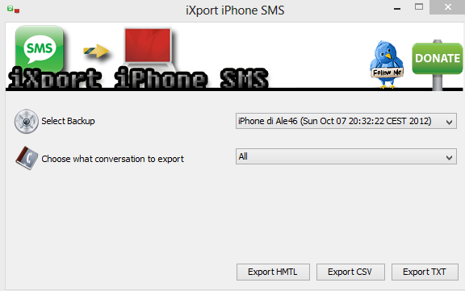
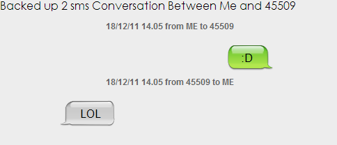

iXport iPhone SMS
Simple tool to export iPhone conversations. The software work using a stored iPhone backup generated by iTunes or if you select a sms database file (for example sms.db stored inside your iPhone).
Export to file
You can choose 3 different method to export your conversation
- TXT: very basic export method. A simple text file.
- CSV: comma-separated values export method. If you need to easily manage you conversation this is the right choice.
- HTML: html based page. The best solution for who love the design things, very similiar to the native iPhone sms conversation style.
Compatibility and Requisites
You can use this software both on Windows and Mac (not tested under Linux, but it should work..), you need only to have JAVA installed on your system.
Screenshoots

Main view

Exported SMS in html